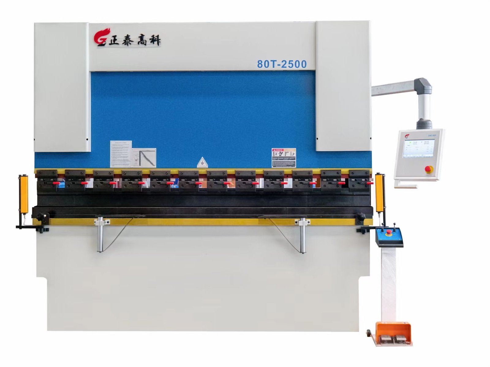
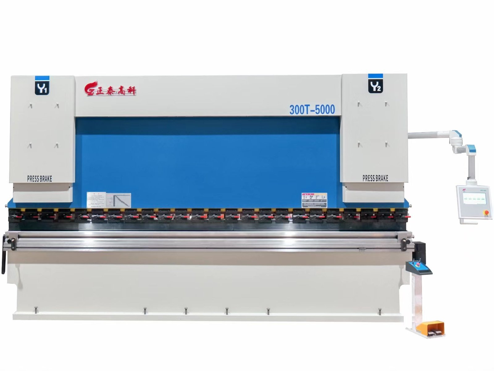

← Назад ко всей продукции


Гибочное оборудование
Листогибочный пресс с торсионной синхронизацией
Проверенное и экономичное решение для повседневной гибки. Механическая торсионная балка обеспечивает синхронное движение обоих цилиндров через простую и прочную связь — меньше электроники, меньше поводов для беспокойства. Это идеальный первый листогибочный пресс с ЧПУ для растущих цехов, производств металлоконструкций и заготовительных предприятий, которым нужна надёжная работа по привлекательной цене.
- Надёжная механическая торсионная синхронизация — просто и долговечно
- Меньшие капитальные затраты и затраты на обслуживание по сравнению с полносерво моделями
- Варианты систем ЧПУ/NC с цифровым позиционированием заднего упора
- Моторизованный задний упор (ось X) с ручной точной подстройкой
- Прочная сварная станина с отпуском — стабильность под нагрузкой
- Широкий выбор усилия (тоннажа) и длины гибки; возможна нестандартная оснастка (инструмент)
💰 Цены напрямую от завода — итоговая цена зависит от усилия (тоннажа), длины гибки и системы ЧПУ. Отправьте ваши требования и получите точное коммерческое предложение в течение 24 часов.
Или позвоните нам напрямую: +86 183 1555 1939 / +86 139 1293 6005 (г-н Хуан)